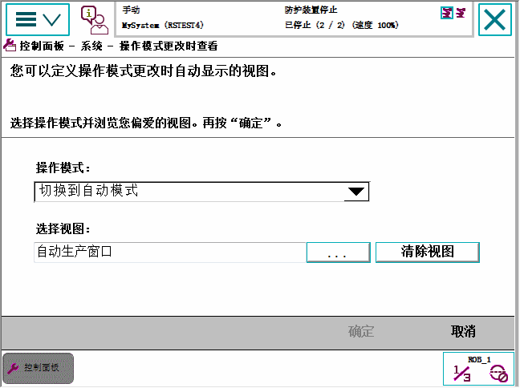

本功能可用于，例如，当切换到自动模式时，显示一个非 Production Window（运行时窗口）视图。
按如下步骤配置FlexPendant，使其在操作模式更改或启动期间自动显示指定视图。
操作 | |
1 | 在ABB菜单上，点击控制面板，然后点击FlexPendant。 |
2 | 点击系统事件视图. 显示系统事件视图窗口。  |
3 | 点击系统事件列表，选择一类系统事件。 可选项如下：
|
4 | 在选定视图字段中，电机...，选择指定系统事件期间显示的恰当应用。 |
5 | 点击 OK（确定）。 保存更改。 |
 | 注意 如果不需要自动显示视图功能，则点击清除视图按钮，删除当下选定的视图。 |